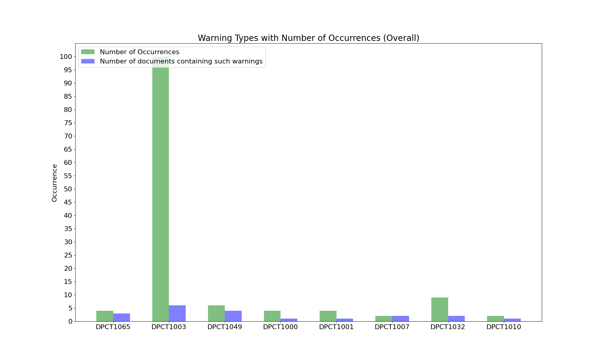

1. Number of Files Containing Warnings: 6
2. Files Containing Warnings:
/kernel_wrapper2.dp.cpp ; /vmc.dp.cpp ; /main.dp.cpp ; /chi2.dp.cpp ; /cluster.dp.cpp ; /shortcuts.dp.hpp ;
3. Number of Warning Type: 8
4. Warning Code Type:
DPCT1065 ; DPCT1003 ; DPCT1049 ; DPCT1000 ; DPCT1001 ; DPCT1007 ; DPCT1032 ; DPCT1010 ;
5. Total Number of Warnings: 131
6. Distribution Graph:
8. Detailed Warning Information (Before CTA)
| No. | Warning Code | File Path | Project Name | Line Number | Warning message |
|---|---|---|---|---|---|
| 1 | DPCT1065 | /kernel_wrapper2.dp.cpp | test_project | 42 | DPCT1065:3: Consider replacing sycl::nd_item::barrier() with * sycl::nd_item::barrier(sycl::access::fence_space::local_space) for better * performance, if there is no access to global memory. |
| 2 | DPCT1065 | /vmc.dp.cpp | test_project | 82 | DPCT1065:4: Consider replacing sycl::nd_item::barrier() with sycl::nd_item::barrier(sycl::access::fence_space::local_space) for better performance, if there is no access to global memory. |
| 3 | DPCT1065 | /vmc.dp.cpp | test_project | 100 | DPCT1065:5: Consider replacing sycl::nd_item::barrier() with sycl::nd_item::barrier(sycl::access::fence_space::local_space) for better performance, if there is no access to global memory. |
| 4 | DPCT1065 | /main.dp.cpp | test_project | 66 | DPCT1065:0: Consider replacing sycl::nd_item::barrier() with sycl::nd_item::barrier(sycl::access::fence_space::local_space) for better performance, if there is no access to global memory. |
| 5 | DPCT1003 | /kernel_wrapper2.dp.cpp | test_project | 126 | DPCT1003:28: Migrated API does not return error code. (*, 0) is inserted. You may need to rewrite this code. |
| 6 | DPCT1003 | /chi2.dp.cpp | test_project | 165 | DPCT1003:8: Migrated API does not return error code. (*, 0) is inserted. You may need to rewrite this code. |
| 7 | DPCT1003 | /chi2.dp.cpp | test_project | 220 | DPCT1003:9: Migrated API does not return error code. (*, 0) is inserted. You may need to rewrite this code. |
| 8 | DPCT1003 | /chi2.dp.cpp | test_project | 242 | DPCT1003:10: Migrated API does not return error code. (*, 0) is inserted. You may need to rewrite this code. |
| 9 | DPCT1003 | /chi2.dp.cpp | test_project | 266 | DPCT1003:11: Migrated API does not return error code. (*, 0) is inserted. You may need to rewrite this code. |
| 10 | DPCT1003 | /chi2.dp.cpp | test_project | 313 | DPCT1003:13: Migrated API does not return error code. (*, 0) is inserted. You may need to rewrite this code. |
| 11 | DPCT1003 | /cluster.dp.cpp | test_project | 262 | DPCT1003:28: Migrated API does not return error code. (*, 0) is inserted. You may need to rewrite this code. |
| 12 | DPCT1003 | /cluster.dp.cpp | test_project | 267 | DPCT1003:30: Migrated API does not return error code. (*, 0) is inserted. You may need to rewrite this code. |
| 13 | DPCT1003 | /cluster.dp.cpp | test_project | 272 | DPCT1003:31: Migrated API does not return error code. (*, 0) is inserted. You may need to rewrite this code. |
| 14 | DPCT1003 | /cluster.dp.cpp | test_project | 277 | DPCT1003:32: Migrated API does not return error code. (*, 0) is inserted. You may need to rewrite this code. |
| 15 | DPCT1003 | /cluster.dp.cpp | test_project | 282 | DPCT1003:33: Migrated API does not return error code. (*, 0) is inserted. You may need to rewrite this code. |
| 16 | DPCT1003 | /cluster.dp.cpp | test_project | 287 | DPCT1003:34: Migrated API does not return error code. (*, 0) is inserted. You may need to rewrite this code. |
| 17 | DPCT1003 | /cluster.dp.cpp | test_project | 292 | DPCT1003:35: Migrated API does not return error code. (*, 0) is inserted. You may need to rewrite this code. |
| 18 | DPCT1003 | /cluster.dp.cpp | test_project | 297 | DPCT1003:36: Migrated API does not return error code. (*, 0) is inserted. You may need to rewrite this code. |
| 19 | DPCT1003 | /cluster.dp.cpp | test_project | 327 | DPCT1003:37: Migrated API does not return error code. (*, 0) is inserted. You may need to rewrite this code. |
| 20 | DPCT1003 | /cluster.dp.cpp | test_project | 332 | DPCT1003:38: Migrated API does not return error code. (*, 0) is inserted. You may need to rewrite this code. |
| 21 | DPCT1003 | /cluster.dp.cpp | test_project | 337 | DPCT1003:39: Migrated API does not return error code. (*, 0) is inserted. You may need to rewrite this code. |
| 22 | DPCT1003 | /cluster.dp.cpp | test_project | 343 | DPCT1003:40: Migrated API does not return error code. (*, 0) is inserted. You may need to rewrite this code. |
| 23 | DPCT1003 | /cluster.dp.cpp | test_project | 349 | DPCT1003:41: Migrated API does not return error code. (*, 0) is inserted. You may need to rewrite this code. |
| 24 | DPCT1003 | /cluster.dp.cpp | test_project | 356 | DPCT1003:42: Migrated API does not return error code. (*, 0) is inserted. You may need to rewrite this code. |
| 25 | DPCT1003 | /cluster.dp.cpp | test_project | 365 | DPCT1003:43: Migrated API does not return error code. (*, 0) is inserted. You may need to rewrite this code. |
| 26 | DPCT1003 | /cluster.dp.cpp | test_project | 374 | DPCT1003:44: Migrated API does not return error code. (*, 0) is inserted. You may need to rewrite this code. |
| 27 | DPCT1003 | /cluster.dp.cpp | test_project | 386 | DPCT1003:45: Migrated API does not return error code. (*, 0) is inserted. You may need to rewrite this code. |
| 28 | DPCT1003 | /cluster.dp.cpp | test_project | 393 | DPCT1003:46: Migrated API does not return error code. (*, 0) is inserted. You may need to rewrite this code. |
| 29 | DPCT1003 | /cluster.dp.cpp | test_project | 413 | DPCT1003:47: Migrated API does not return error code. (*, 0) is inserted. You may need to rewrite this code. |
| 30 | DPCT1003 | /cluster.dp.cpp | test_project | 419 | DPCT1003:48: Migrated API does not return error code. (*, 0) is inserted. You may need to rewrite this code. |
| 31 | DPCT1003 | /cluster.dp.cpp | test_project | 425 | DPCT1003:49: Migrated API does not return error code. (*, 0) is inserted. You may need to rewrite this code. |
| 32 | DPCT1003 | /cluster.dp.cpp | test_project | 431 | DPCT1003:50: Migrated API does not return error code. (*, 0) is inserted. You may need to rewrite this code. |
| 33 | DPCT1003 | /cluster.dp.cpp | test_project | 439 | DPCT1003:51: Migrated API does not return error code. (*, 0) is inserted. You may need to rewrite this code. |
| 34 | DPCT1003 | /cluster.dp.cpp | test_project | 447 | DPCT1003:52: Migrated API does not return error code. (*, 0) is inserted. You may need to rewrite this code. |
| 35 | DPCT1003 | /cluster.dp.cpp | test_project | 456 | DPCT1003:53: Migrated API does not return error code. (*, 0) is inserted. You may need to rewrite this code. |
| 36 | DPCT1003 | /cluster.dp.cpp | test_project | 466 | DPCT1003:54: Migrated API does not return error code. (*, 0) is inserted. You may need to rewrite this code. |
| 37 | DPCT1003 | /cluster.dp.cpp | test_project | 487 | DPCT1003:55: Migrated API does not return error code. (*, 0) is inserted. You may need to rewrite this code. |
| 38 | DPCT1003 | /cluster.dp.cpp | test_project | 493 | DPCT1003:56: Migrated API does not return error code. (*, 0) is inserted. You may need to rewrite this code. |
| 39 | DPCT1003 | /cluster.dp.cpp | test_project | 499 | DPCT1003:57: Migrated API does not return error code. (*, 0) is inserted. You may need to rewrite this code. |
| 40 | DPCT1003 | /cluster.dp.cpp | test_project | 507 | DPCT1003:58: Migrated API does not return error code. (*, 0) is inserted. You may need to rewrite this code. |
| 41 | DPCT1003 | /cluster.dp.cpp | test_project | 515 | DPCT1003:59: Migrated API does not return error code. (*, 0) is inserted. You may need to rewrite this code. |
| 42 | DPCT1003 | /cluster.dp.cpp | test_project | 524 | DPCT1003:60: Migrated API does not return error code. (*, 0) is inserted. You may need to rewrite this code. |
| 43 | DPCT1003 | /cluster.dp.cpp | test_project | 534 | DPCT1003:61: Migrated API does not return error code. (*, 0) is inserted. You may need to rewrite this code. |
| 44 | DPCT1003 | /cluster.dp.cpp | test_project | 624 | DPCT1003:62: Migrated API does not return error code. (*, 0) is inserted. You may need to rewrite this code. |
| 45 | DPCT1003 | /cluster.dp.cpp | test_project | 630 | DPCT1003:63: Migrated API does not return error code. (*, 0) is inserted. You may need to rewrite this code. |
| 46 | DPCT1003 | /cluster.dp.cpp | test_project | 637 | DPCT1003:64: Migrated API does not return error code. (*, 0) is inserted. You may need to rewrite this code. |
| 47 | DPCT1003 | /cluster.dp.cpp | test_project | 644 | DPCT1003:65: Migrated API does not return error code. (*, 0) is inserted. You may need to rewrite this code. |
| 48 | DPCT1003 | /cluster.dp.cpp | test_project | 761 | DPCT1003:66: Migrated API does not return error code. (*, 0) is inserted. You may need to rewrite this code. |
| 49 | DPCT1003 | /cluster.dp.cpp | test_project | 818 | DPCT1003:67: Migrated API does not return error code. (*, 0) is inserted. You may need to rewrite this code. |
| 50 | DPCT1003 | /cluster.dp.cpp | test_project | 861 | DPCT1003:70: Migrated API does not return error code. (*, 0) is inserted. You may need to rewrite this code. |
| 51 | DPCT1003 | /cluster.dp.cpp | test_project | 891 | DPCT1003:71: Migrated API does not return error code. (*, 0) is inserted. You may need to rewrite this code. |
| 52 | DPCT1003 | /cluster.dp.cpp | test_project | 914 | DPCT1003:72: Migrated API does not return error code. (*, 0) is inserted. You may need to rewrite this code. |
| 53 | DPCT1003 | /cluster.dp.cpp | test_project | 959 | DPCT1003:73: Migrated API does not return error code. (*, 0) is inserted. You may need to rewrite this code. |
| 54 | DPCT1003 | /cluster.dp.cpp | test_project | 997 | DPCT1003:74: Migrated API does not return error code. (*, 0) is inserted. You may need to rewrite this code. |
| 55 | DPCT1003 | /cluster.dp.cpp | test_project | 1037 | DPCT1003:75: Migrated API does not return error code. (*, 0) is inserted. You may need to rewrite this code. |
| 56 | DPCT1003 | /cluster.dp.cpp | test_project | 1092 | DPCT1003:76: Migrated API does not return error code. (*, 0) is inserted. You may need to rewrite this code. |
| 57 | DPCT1003 | /cluster.dp.cpp | test_project | 1213 | DPCT1003:79: Migrated API does not return error code. (*, 0) is inserted. You may need to rewrite this code. |
| 58 | DPCT1003 | /cluster.dp.cpp | test_project | 1218 | DPCT1003:80: Migrated API does not return error code. (*, 0) is inserted. You may need to rewrite this code. |
| 59 | DPCT1003 | /cluster.dp.cpp | test_project | 1223 | DPCT1003:81: Migrated API does not return error code. (*, 0) is inserted. You may need to rewrite this code. |
| 60 | DPCT1003 | /vmc.dp.cpp | test_project | 270 | DPCT1003:10: Migrated API does not return error code. (*, 0) is inserted. You may need to rewrite this code. |
| 61 | DPCT1003 | /vmc.dp.cpp | test_project | 275 | DPCT1003:11: Migrated API does not return error code. (*, 0) is inserted. You may need to rewrite this code. |
| 62 | DPCT1003 | /vmc.dp.cpp | test_project | 280 | DPCT1003:12: Migrated API does not return error code. (*, 0) is inserted. You may need to rewrite this code. |
| 63 | DPCT1003 | /vmc.dp.cpp | test_project | 285 | DPCT1003:13: Migrated API does not return error code. (*, 0) is inserted. You may need to rewrite this code. |
| 64 | DPCT1003 | /vmc.dp.cpp | test_project | 290 | DPCT1003:14: Migrated API does not return error code. (*, 0) is inserted. You may need to rewrite this code. |
| 65 | DPCT1003 | /vmc.dp.cpp | test_project | 295 | DPCT1003:15: Migrated API does not return error code. (*, 0) is inserted. You may need to rewrite this code. |
| 66 | DPCT1003 | /vmc.dp.cpp | test_project | 300 | DPCT1003:16: Migrated API does not return error code. (*, 0) is inserted. You may need to rewrite this code. |
| 67 | DPCT1003 | /vmc.dp.cpp | test_project | 305 | DPCT1003:17: Migrated API does not return error code. (*, 0) is inserted. You may need to rewrite this code. |
| 68 | DPCT1003 | /vmc.dp.cpp | test_project | 310 | DPCT1003:18: Migrated API does not return error code. (*, 0) is inserted. You may need to rewrite this code. |
| 69 | DPCT1003 | /vmc.dp.cpp | test_project | 316 | DPCT1003:19: Migrated API does not return error code. (*, 0) is inserted. You may need to rewrite this code. |
| 70 | DPCT1003 | /vmc.dp.cpp | test_project | 322 | DPCT1003:20: Migrated API does not return error code. (*, 0) is inserted. You may need to rewrite this code. |
| 71 | DPCT1003 | /vmc.dp.cpp | test_project | 407 | DPCT1003:22: Migrated API does not return error code. (*, 0) is inserted. You may need to rewrite this code. |
| 72 | DPCT1003 | /vmc.dp.cpp | test_project | 439 | DPCT1003:23: Migrated API does not return error code. (*, 0) is inserted. You may need to rewrite this code. |
| 73 | DPCT1003 | /vmc.dp.cpp | test_project | 444 | DPCT1003:24: Migrated API does not return error code. (*, 0) is inserted. You may need to rewrite this code. |
| 74 | DPCT1003 | /vmc.dp.cpp | test_project | 449 | DPCT1003:25: Migrated API does not return error code. (*, 0) is inserted. You may need to rewrite this code. |
| 75 | DPCT1003 | /vmc.dp.cpp | test_project | 454 | DPCT1003:26: Migrated API does not return error code. (*, 0) is inserted. You may need to rewrite this code. |
| 76 | DPCT1003 | /vmc.dp.cpp | test_project | 459 | DPCT1003:27: Migrated API does not return error code. (*, 0) is inserted. You may need to rewrite this code. |
| 77 | DPCT1003 | /vmc.dp.cpp | test_project | 464 | DPCT1003:28: Migrated API does not return error code. (*, 0) is inserted. You may need to rewrite this code. |
| 78 | DPCT1003 | /vmc.dp.cpp | test_project | 469 | DPCT1003:29: Migrated API does not return error code. (*, 0) is inserted. You may need to rewrite this code. |
| 79 | DPCT1003 | /vmc.dp.cpp | test_project | 474 | DPCT1003:30: Migrated API does not return error code. (*, 0) is inserted. You may need to rewrite this code. |
| 80 | DPCT1003 | /vmc.dp.cpp | test_project | 479 | DPCT1003:31: Migrated API does not return error code. (*, 0) is inserted. You may need to rewrite this code. |
| 81 | DPCT1003 | /vmc.dp.cpp | test_project | 484 | DPCT1003:32: Migrated API does not return error code. (*, 0) is inserted. You may need to rewrite this code. |
| 82 | DPCT1003 | /vmc.dp.cpp | test_project | 489 | DPCT1003:33: Migrated API does not return error code. (*, 0) is inserted. You may need to rewrite this code. |
| 83 | DPCT1003 | /main.dp.cpp | test_project | 217 | DPCT1003:1: Migrated API does not return error code. (*, 0) is inserted. You may need to rewrite this code. |
| 84 | DPCT1003 | /main.dp.cpp | test_project | 223 | DPCT1003:3: Migrated API does not return error code. (*, 0) is inserted. You may need to rewrite this code. |
| 85 | DPCT1003 | /main.dp.cpp | test_project | 232 | DPCT1003:5: Migrated API does not return error code. (*, 0) is inserted. You may need to rewrite this code. |
| 86 | DPCT1003 | /main.dp.cpp | test_project | 242 | DPCT1003:7: Migrated API does not return error code. (*, 0) is inserted. You may need to rewrite this code. |
| 87 | DPCT1003 | /main.dp.cpp | test_project | 250 | DPCT1003:9: Migrated API does not return error code. (*, 0) is inserted. You may need to rewrite this code. |
| 88 | DPCT1003 | /main.dp.cpp | test_project | 260 | DPCT1003:11: Migrated API does not return error code. (*, 0) is inserted. You may need to rewrite this code. |
| 89 | DPCT1003 | /main.dp.cpp | test_project | 269 | DPCT1003:13: Migrated API does not return error code. (*, 0) is inserted. You may need to rewrite this code. |
| 90 | DPCT1003 | /main.dp.cpp | test_project | 336 | DPCT1003:21: Migrated API does not return error code. (*, 0) is inserted. You may need to rewrite this code. |
| 91 | DPCT1003 | /shortcuts.dp.hpp | test_project | 28 | DPCT1003:29: Migrated API does not return error code. (*, 0) is inserted. You may need to rewrite this code. |
| 92 | DPCT1003 | /shortcuts.dp.hpp | test_project | 32 | DPCT1003:209: Migrated API does not return error code. (*, 0) is inserted. You may need to rewrite this code. |
| 93 | DPCT1003 | /shortcuts.dp.hpp | test_project | 46 | DPCT1003:30: Migrated API does not return error code. (*, 0) is inserted. You may need to rewrite this code. |
| 94 | DPCT1003 | /shortcuts.dp.hpp | test_project | 50 | DPCT1003:210: Migrated API does not return error code. (*, 0) is inserted. You may need to rewrite this code. |
| 95 | DPCT1003 | /shortcuts.dp.hpp | test_project | 61 | DPCT1003:31: Migrated API does not return error code. (*, 0) is inserted. You may need to rewrite this code. |
| 96 | DPCT1003 | /shortcuts.dp.hpp | test_project | 65 | DPCT1003:211: Migrated API does not return error code. (*, 0) is inserted. You may need to rewrite this code. |
| 97 | DPCT1003 | /shortcuts.dp.hpp | test_project | 79 | DPCT1003:32: Migrated API does not return error code. (*, 0) is inserted. You may need to rewrite this code. |
| 98 | DPCT1003 | /shortcuts.dp.hpp | test_project | 83 | DPCT1003:212: Migrated API does not return error code. (*, 0) is inserted. You may need to rewrite this code. |
| 99 | DPCT1003 | /shortcuts.dp.hpp | test_project | 94 | DPCT1003:33: Migrated API does not return error code. (*, 0) is inserted. You may need to rewrite this code. |
| 100 | DPCT1003 | /shortcuts.dp.hpp | test_project | 98 | DPCT1003:213: Migrated API does not return error code. (*, 0) is inserted. You may need to rewrite this code. |
| 101 | DPCT1003 | /shortcuts.dp.hpp | test_project | 109 | DPCT1003:34: Migrated API does not return error code. (*, 0) is inserted. You may need to rewrite this code. |
| 102 | DPCT1003 | /shortcuts.dp.hpp | test_project | 113 | DPCT1003:214: Migrated API does not return error code. (*, 0) is inserted. You may need to rewrite this code. |
| 103 | DPCT1003 | /shortcuts.dp.hpp | test_project | 126 | DPCT1003:35: Migrated API does not return error code. (*, 0) is inserted. You may need to rewrite this code. |
| 104 | DPCT1003 | /shortcuts.dp.hpp | test_project | 130 | DPCT1003:215: Migrated API does not return error code. (*, 0) is inserted. You may need to rewrite this code. |
| 105 | DPCT1049 | /kernel_wrapper2.dp.cpp | test_project | 141 | DPCT1049:3: The workgroup size passed to the SYCL kernel may exceed the limit. To get the device limit, query info::device::max_work_group_size. Adjust the workgroup size if needed. |
| 106 | DPCT1049 | /chi2.dp.cpp | test_project | 296 | DPCT1049:12: The workgroup size passed to the SYCL kernel may exceed the limit. To get the device limit, query info::device::max_work_group_size. Adjust the workgroup size if needed. |
| 107 | DPCT1049 | /cluster.dp.cpp | test_project | 873 | DPCT1049:68: The workgroup size passed to the SYCL kernel may exceed the limit. To get the device limit, query info::device::max_work_group_size. Adjust the workgroup size if needed. |
| 108 | DPCT1049 | /cluster.dp.cpp | test_project | 928 | DPCT1049:69: The workgroup size passed to the SYCL kernel may exceed the limit. To get the device limit, query info::device::max_work_group_size. Adjust the workgroup size if needed. |
| 109 | DPCT1049 | /main.dp.cpp | test_project | 290 | DPCT1049:15: The workgroup size passed to the SYCL kernel may exceed the limit. To get the device limit, query info::device::max_work_group_size. Adjust the workgroup size if needed. |
| 110 | DPCT1049 | /main.dp.cpp | test_project | 315 | DPCT1049:18: The workgroup size passed to the SYCL kernel may exceed the limit. To get the device limit, query info::device::max_work_group_size. Adjust the workgroup size if needed. |
| 111 | DPCT1000 | /chi2.dp.cpp | test_project | 228 | DPCT1000:1: Error handling if-stmt was detected but could not be rewritten. |
| 112 | DPCT1000 | /chi2.dp.cpp | test_project | 249 | DPCT1000:3: Error handling if-stmt was detected but could not be rewritten. |
| 113 | DPCT1000 | /chi2.dp.cpp | test_project | 275 | DPCT1000:5: Error handling if-stmt was detected but could not be rewritten. |
| 114 | DPCT1000 | /chi2.dp.cpp | test_project | 321 | DPCT1000:7: Error handling if-stmt was detected but could not be rewritten. |
| 115 | DPCT1001 | /chi2.dp.cpp | test_project | 234 | DPCT1001:0: The statement could not be removed. |
| 116 | DPCT1001 | /chi2.dp.cpp | test_project | 255 | DPCT1001:2: The statement could not be removed. |
| 117 | DPCT1001 | /chi2.dp.cpp | test_project | 281 | DPCT1001:4: The statement could not be removed. |
| 118 | DPCT1001 | /chi2.dp.cpp | test_project | 327 | DPCT1001:6: The statement could not be removed. |
| 119 | DPCT1007 | /cluster.dp.cpp | test_project | 1119 | DPCT1007:77: Migration of this CUDA API is not supported by the Intel(R) * DPC++ Compatibility Tool. |
| 120 | DPCT1007 | /vmc.dp.cpp | test_project | 56 | DPCT1007:3: Migration of this CUDA API is not supported by the Intel(R) DPC++ Compatibility Tool. |
| 121 | DPCT1032 | /cluster.dp.cpp | test_project | 1209 | DPCT1032:78: Different generator is used, you may need to adjust the code. |
| 122 | DPCT1032 | /vmc.dp.cpp | test_project | 34 | DPCT1032:0: Different generator is used, you may need to adjust the code. |
| 123 | DPCT1032 | /vmc.dp.cpp | test_project | 40 | DPCT1032:1: Different generator is used, you may need to adjust the code. |
| 124 | DPCT1032 | /vmc.dp.cpp | test_project | 50 | DPCT1032:2: Different generator is used, you may need to adjust the code. |
| 125 | DPCT1032 | /vmc.dp.cpp | test_project | 166 | DPCT1032:6: Different generator is used, you may need to adjust the code. |
| 126 | DPCT1032 | /vmc.dp.cpp | test_project | 189 | DPCT1032:7: Different generator is used, you may need to adjust the code. |
| 127 | DPCT1032 | /vmc.dp.cpp | test_project | 209 | DPCT1032:8: Different generator is used, you may need to adjust the code. |
| 128 | DPCT1032 | /vmc.dp.cpp | test_project | 265 | DPCT1032:9: Different generator is used, you may need to adjust the code. |
| 129 | DPCT1032 | /vmc.dp.cpp | test_project | 326 | DPCT1032:21: Different generator is used, you may need to adjust the code. |
| 130 | DPCT1010 | /main.dp.cpp | test_project | 302 | DPCT1010:16: SYCL uses exceptions to report errors and does not use the error codes. The call was replaced with 0. You need to rewrite this code. |
| 131 | DPCT1010 | /main.dp.cpp | test_project | 328 | DPCT1010:19: SYCL uses exceptions to report errors and does not use the error codes. The call was replaced with 0. You need to rewrite this code. |
9. Detailed Warning Information (After CTA)
| No. | Warning Code | File Path | Project Name | Line Number | Warning message |
|---|---|---|---|---|---|
| 1 | DPCT1007 | /cluster.dp.cpp | destination_dir | 837 | DPCT1007:77: Migration of this CUDA API is not supported by the Intel(R) * DPC++ Compatibility Tool. |
| 2 | DPCT1007 | /vmc.dp.cpp | destination_dir | 56 | DPCT1007:3: Migration of this CUDA API is not supported by the Intel(R) DPC++ Compatibility Tool. |
| 3 | DPCT1010 | /main.dp.cpp | destination_dir | 266 | DPCT1010:16: SYCL uses exceptions to report errors and does not use the error codes. The call was replaced with 0. You need to rewrite this code. |
| 4 | DPCT1010 | /main.dp.cpp | destination_dir | 295 | DPCT1010:19: SYCL uses exceptions to report errors and does not use the error codes. The call was replaced with 0. You need to rewrite this code. |
10. Detailed Recommendation Information (After CTA)
| No. | Recommendation Code | File Path | Project Name | Line Number | Recommendation message |
|---|---|---|---|---|---|
| 1 | CTA1065 | /kernel_wrapper2.dp.cpp | destination_dir | 42 | CTA1065:3: CTA recommended to ignore this warning. but you can also consider replacing 'item_ct1.barrier();' with 'item_ct1.barrier(sycl::access::fence_space::local_space);' to have have better performance if the kernel function has no memory accesses in the global memory. |
| 2 | CTA1065 | /vmc.dp.cpp | destination_dir | 82 | CTA1065:4: CTA recommended to ignore this warning. but you can also consider replacing 'item_ct1.barrier();' with 'item_ct1.barrier(sycl::access::fence_space::local_space);' to have have better performance if the kernel function has no memory accesses in the global memory. |
| 3 | CTA1065 | /vmc.dp.cpp | destination_dir | 102 | CTA1065:5: CTA recommended to ignore this warning. but you can also consider replacing 'item_ct1.barrier();' with 'item_ct1.barrier(sycl::access::fence_space::local_space);' to have have better performance if the kernel function has no memory accesses in the global memory. |
| 4 | CTA1065 | /main.dp.cpp | destination_dir | 66 | CTA1065:0: CTA recommended to ignore this warning. but you can also consider replacing 'item_ct1.barrier();' with 'item_ct1.barrier(sycl::access::fence_space::local_space);' to have have better performance if the kernel function has no memory accesses in the global memory. |
| 5 | CTA1000 | /chi2.dp.cpp | destination_dir | 217 | CTA1000:1: Base on the experience, strongly recommended to ignore this warning. |
| 6 | CTA1000 | /chi2.dp.cpp | destination_dir | 231 | CTA1000:3: Base on the experience, strongly recommended to ignore this warning. |
| 7 | CTA1000 | /chi2.dp.cpp | destination_dir | 248 | CTA1000:5: Base on the experience, strongly recommended to ignore this warning. |
| 8 | CTA1000 | /chi2.dp.cpp | destination_dir | 287 | CTA1000:7: Base on the experience, strongly recommended to ignore this warning. |
| 9 | CTA1001 | /chi2.dp.cpp | destination_dir | 222 | CTA1001:0: Base on the experience, strongly recommended to ignore this warning. |
| 10 | CTA1001 | /chi2.dp.cpp | destination_dir | 236 | CTA1001:2: Base on the experience, strongly recommended to ignore this warning. |
| 11 | CTA1001 | /chi2.dp.cpp | destination_dir | 253 | CTA1001:4: Base on the experience, strongly recommended to ignore this warning. |
| 12 | CTA1001 | /chi2.dp.cpp | destination_dir | 292 | CTA1001:6: Base on the experience, strongly recommended to ignore this warning. |
| 13 | CTA1032 | /cluster.dp.cpp | destination_dir | 927 | CTA1032:78: Base on the experience, recommended to ignore this warning. If it didn't work, adjust the code. |
| 14 | CTA1032 | /vmc.dp.cpp | destination_dir | 34 | CTA1032:0: Base on the experience, recommended to ignore this warning. If it didn't work, adjust the code. |
| 15 | CTA1032 | /vmc.dp.cpp | destination_dir | 40 | CTA1032:1: Base on the experience, recommended to ignore this warning. If it didn't work, adjust the code. |
| 16 | CTA1032 | /vmc.dp.cpp | destination_dir | 50 | CTA1032:2: Base on the experience, recommended to ignore this warning. If it didn't work, adjust the code. |
| 17 | CTA1032 | /vmc.dp.cpp | destination_dir | 170 | CTA1032:6: Base on the experience, recommended to ignore this warning. If it didn't work, adjust the code. |
| 18 | CTA1032 | /vmc.dp.cpp | destination_dir | 193 | CTA1032:7: Base on the experience, recommended to ignore this warning. If it didn't work, adjust the code. |
| 19 | CTA1032 | /vmc.dp.cpp | destination_dir | 213 | CTA1032:8: Base on the experience, recommended to ignore this warning. If it didn't work, adjust the code. |
| 20 | CTA1032 | /vmc.dp.cpp | destination_dir | 269 | CTA1032:9: Base on the experience, recommended to ignore this warning. If it didn't work, adjust the code. |
| 21 | CTA1032 | /vmc.dp.cpp | destination_dir | 285 | CTA1032:21: Base on the experience, recommended to ignore this warning. If it didn't work, adjust the code. |
11. Number of warnings have been fixed: 106
12. Number of warnings have CTA recommendation: 21
13. Comparison of before & after :
vmc.html